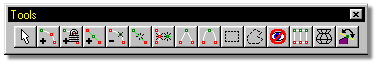
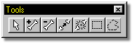
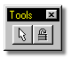
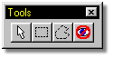
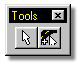

Below are images of the toolbars available in Martin Hash’s 3-Dimensional
Animation. For more information on any tool, click on the buttons.
Below are images of the toolbars available in Martin Hash’s 3-Dimensional
Animation. For more information on any tool, click on the buttons.

Modeler Tools:

Bones Tools:

Skeletal Tools:

Muscle Tools:

Directing Tools:
